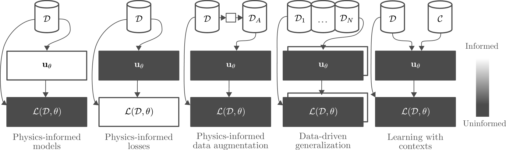

利用物理知识进行预测的机器学习综述
《Machine Learning with Physics Knowledge for Prediction: A Survey》
56页的综述，还是比较详细的。
这项调查研究了将机器学习与物理知识相结合进行预测的广泛方法和模型，重点关注偏微分方程。这些方法引起了人们的极大兴趣，因为它们通过使用小型或大型数据集改进预测模型以及具有有用归纳偏差的表达预测模型，对推进科学研究和工业实践产生潜在影响。该调查分为两个部分。第一个考虑通过目标函数、结构化预测模型和数据增强将物理知识融入架构级别。第二个观点将数据视为物理知识，这促使人们将多任务、元和情境学习视为以数据驱动的方式整合物理知识的替代方法。最后，我们还提供了这些方法应用的工业视角，以及对物理信息机器学习的开源生态系统的调查。
简介
结合数据和机器学习方法的各种方式

贡献：
这项调查的贡献是从机器学习的角度关注物理信息学习的挑战。这包括研究基于物理的架构和损失函数，以及适用于基于物理的环境的模型和方法，例如潜变量模型、数据增强、多任务学习和元学习。该调查旨在实现几个关键目标。首先，我们的目标是向机器学习研究人员识别和传达物理信息学习中的突出挑战，为未来的研究方向提供途径。其次，该调查提供了重要的指导，将物理知识学习概念定位在更广泛的机器学习领域以及各个工程领域之间的联系中。第三，我们建立了一个精细的方法分类法，为分类和区分不同方法提供了一个结构化框架。此外，该调查还评估了用于评估这些方法和用例的工业相关性的框架。 最后，我们确定了可能影响工业应用的未来趋势。通过这些贡献，该调查旨在弥合理论研究和实际实施之间的差距，使基于物理的机器学习更加强大和有用，以解决现实世界中的棘手问题。
背景
常微分方程
偏微分方程
系统识别（System Identification）：
系统辨识是利用输入和输出的测量来构建动力系统数学模型的实践。这种实践是整个科学和工程的基础，以便根据观察到的现实来建立和校准数学模型。
系统识别涉及通过一系列输入来定义系统的动态$w_t$,测量值$y_t$,以及初始状态 $x_{1}$ 在有限的地平线上$T$ 作为轨迹，即 $Y=[\mathbf{y}1,…,\mathbf{y}T]$ 。通常，假设马尔可夫动力系统，即状态$x_t+1=f\theta(x_t,w_t)$和观察$y_t=g\theta(x_t)$两者参数化为$\theta$,以及状态和观测值之间的映射$g$通常被设计为简化学习问题并确保可观察性。此外，可以添加附加噪声项来捕获动态和传感器中的不确定性，从而产生可能性$p(x_{t+1}\mid x_t,w_t,\theta)$ 和$p(\mathbf{y}_t\mid\mathbf{x}_t,\boldsymbol{\theta})$。由于轨迹数据不是独立同分布(IID),因此数据集上的典型回归方法可能无法产生令人满意的结果，因为随着时间的推移，预测误差可能会因累积的预测误差而发生漂移。一种可能的解决方案是通过时间反向传播，
$$
L_{BPTT}(\theta) = \sum_{k=1}^{K} \sum_{t=1}^{T-h} \sum_{j=1}^{h} L(y_{t+j+1}^{(k)}, g_{\theta}(f_{\theta} \circ \cdots \circ f_{\theta}(x_{t}^{(k)}, w_{t}^{(k)})),
$$
其中考虑了预测误差$\kappa$时间范围内的轨迹$h$ 。这捕获了预测问题的顺序性质，但需要更昂贵且可能更难以优化的巨标。概率方法考虑联合分布$p(Y,X|W,\theta)$继续马尔可夫假设，分解为$p(x_1)\Pi_{t=1}^Tp(y_t|x_t,\theta)p(x_{t+1}|x_t,w_t,\theta)$。潜在状态$x$使用贝叶斯过滤和平滑算法推断,以及模型参数$\theta$进行优化以最大化测量的对数边际可能性$\mathcal{L}_\mathrm{LML}(\boldsymbol{\theta})=\log\int p(\boldsymbol{Y},\boldsymbol{X}|\boldsymbol{W},\boldsymbol{\theta})$d$\boldsymbol{X}$使用期望最大化 (EM)等算法。如果后验概率为1，则需要近似推理技术$p(X\mid Y,W,\theta)$不能以封闭形式计算。